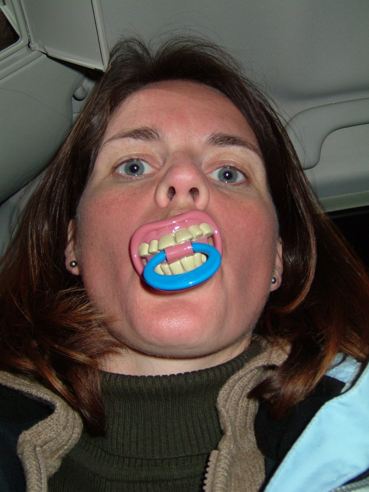

Om Kristin

Hei! Jeg heter Kristin, og det er jeg som står bak Ullsprell. Jeg lager hver eneste ullfigur for hånd – med kjærlighet, tålmodighet og litt eventyrstøv.
Inspirert av naturen, norsk folketro og barndommens fantasi, ønsker jeg å skape noe som varer – både i kvalitet og uttrykk.
Følg meg gjerne på Instagram for glimt fra verkstedet og nye figurer:
@ullsprell